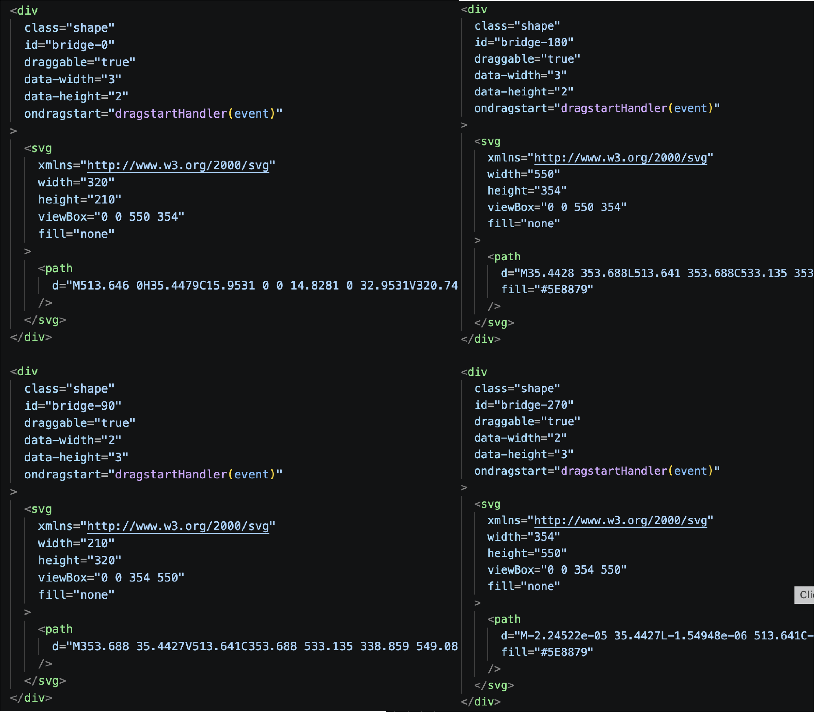
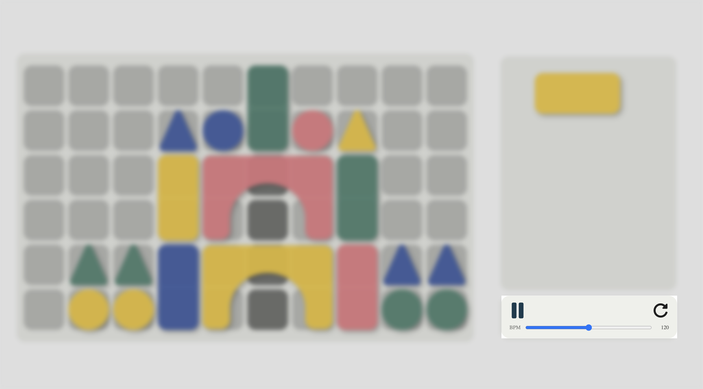
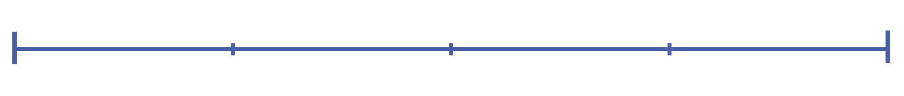

Prototype
skip to
Conceptual Response
My project is inspired by childhood play, specifically using wooden building blocks. These toys represent an early experience of creativity, where users can build and imagine freely using a small set of simple materials. With just a few blocks, people can create different structures like towers or objects, creating a sense of open-ended and limitless creativity. This idea forms the foundation of my project.

To translate this into a digital context, I developed a website that allows users to build compositions using simple block-like shapes. I then extended this idea by translating these visual builds into sound using Tone.js. This adds another layer to the interaction, where users are not only building visually, but also unintentionally creating sound patterns through their placement.

The novelty of this project comes from combining spatial interaction
with sound. Instead of using common inputs like typing or clicking
to generate audio, the system uses the position, colour, and
arrangement of blocks to influence the sound output. This turns a
simple building interaction into a more playful way of creating
music.
This idea was influenced by Incredibox, a project explored in Assignment 1, which map simple inputs to sound. However, my project focuses more on building and arranging objects in space, making the interaction feel more like constructing rather than directly triggering sounds.

The design is guided by the interaction design principles of:
1. Mapping
Mapping is used to connect visual properties, such as colour and vertical position, to different sounds and pitch.
2. Feedback
Feedback is provided through both sound and visual responses, allowing users to immediately see and hear the result of their actions.
Since this is a prototype, I focused on keeping the system simple and easy to understand. The interface is visually driven, so users can explore and learn through interaction without needing instructions. This reflects the idea of childhood play, where users experiment freely and discover outcomes through doing.
Technical Approach
For this project, I used HTML, CSS, and JavaScript to build the core functionality of the website, with Tone.js integrated to translate visual interactions into sound. This allowed me to explore how user input could influence both visual and audio outputs at the same time. To manage the complexity of the system, I approached development in stages, starting with the basic grid and interaction logic, before layering in more advanced features such as sound mapping, looping, and user controls.
The system consists of four core interactions:
1.Drag & Drop System
Enables shapes to be placed within a structured grid while ensuring accurate positioning and preventing overlap.
2.Sound System
Translates visual placement into sound through colour-based mapping and pitch variation
3.Feedback System
Provides real-time visual and audio responses, especially through the looping system
4.Control Panel
Allows users to manage playback and adjust tempo, supporting experimentation and control.
This structured approach allowed the project to be broken down into smaller parts, making it more manageable and easier to tackle.
Drag & Drop System
This interaction was one of the most complex and the biggest part of
the project, as it required multiple systems to work together
seamlessly.
To manage this, I broke the process down into three
key stages:
Grid & Placement
Shape Clone System
Interaction Refinement
Grid & Placement
I began by implementing a basic drag-and-drop structure using a reference from W3Schools, which provided the foundation for recognising draggable elements and valid drop zones.
The next step was structuring the square grid. I wanted each square to be uniquely identifiable so it could be referenced later for the feedback system and to manage occupied states. Rather than assigning individual IDs, I used data attributes (data-row and data-col) to store each square’s coordinates. This allowed JavaScript to easily track and interact with each cell based on its position.


This system became essential for handling placement logic. When a
shape is dropped, the program calculates its position relative to
the grid and determines which cells it should occupy. Using these
coordinates, the system checks for boundaries and prevents
overlaps by marking occupied cells accordingly.
Snapping the shapes accurately to the grid was one of the more
challenging aspects. I had to account for the size of each shape
and where the user was grabbing it from, ensuring that placement
felt natural rather than jumping unpredictably. Once placed, CSS
was used to visually align the shapes within the grid.
To improve flexibility, I implemented a system that updates occupied cells whenever a shape is moved. This allows users to reposition shapes freely, including dragging them back into the container, making the interaction feel more fluid and responsive.

Shape Clone System
Since the interaction required multiple instances of the same shapes, similar to a set of wooden blocks, I chose to implement cloning through JavaScript rather than duplicating elements in HTML. This approach allowed for greater flexibility, enabling shapes to be generated dynamically and adapted within the interaction.
I wanted each interaction to feel unique, so no two compositions
would produce the same outcome. Inspired by the open-ended nature
of wooden blocks, where users can build and then reset by placing
everything back, the system encourages experimentation and
replayability.
To achieve this, each shape is cloned dynamically and assigned
randomised properties, including colour, position, and initial
rotation. When shapes are returned to the container, they also
reset into new random orientations, mimicking how real blocks
would naturally fall into different positions while packing up.
This ensures that every session begins with a slightly different
layout, making the interaction feel more playful and less
predictable.

Interaction Refinement
One improvement I introduced was allowing users to return shapes back to the container after placing them on the grid. This gave users more flexibility to adjust or undo their compositions, rather than being locked into their initial placement. Although this was a small addition, it improved usability and made the interaction feel more forgiving.

Rotation
Another improvement was the introduction of shape rotation, which
gives users more control over how they arrange compositions within
the grid. This process involved a significant amount of trial and
error.
Initially, I attempted to rotate the shapes using CSS transforms.
While this visually rotated the element, it caused issues with
maintaining consistent sizing and alignment. In particular, the
SVGs would sometimes distort or scale incorrectly.
After multiple iterations, I used AI to help identify the issue,
which was related to how the SVG viewBox and dimensions were being
handled. Every time the shape was placed into the grid, the SVG
would distort, creating a visible glitch. Rather than continuing
with an increasingly complex solution, I decided to take a more
stable and controlled approach.
I resolved this by creating alternative SVG states for each
rotation and swapping between them. This allowed me to maintain
consistent proportions and avoid distortion, while still achieving
the intended rotation effect. It also required recalculating each
shape’s width and height in relation to the grid, as well as
updating how it occupies cells after rotation.
Overall, this decision prioritised reliability and consistency,
resulting in a smoother and more intuitive user experience.

Sound System

This interaction focuses on translating visual placement into sound,
allowing users to create simple musical compositions through
interaction with the grid. Using JavaScript and Tone.js, sound is
triggered based on both the colour and position of each shape placed
on the grid.
Each colour is mapped to a different type of sound, giving every
shape a distinct audio identity. This helps users recognise patterns
and differentiate between elements within their composition. In
addition to colour, pitch is determined by the vertical position of
the shape within the grid, where higher placements produce higher
notes and lower placements generate deeper tones. This creates a
more structured and musical system.
To reinforce this interaction, sound is triggered immediately when a
shape is placed onto the grid, providing
instant feedback and
strengthening the connection between user action and system
response.
When the loop is activated, the system iterates through each column
of the grid, checking for occupied cells and triggering the
corresponding sounds in sequence. This creates a continuous playback
of the user’s composition, transforming static placement into a
dynamic audio experience.
Overall, this system encourages experimentation and exploration
while maintaining a clear relationship between visual input and
audio output.

Feedback System
The feedback system was designed to provide real-time visual and audio responses to user actions, reinforcing the interaction and improving usability. This follows the interaction design principle of feedback, where the system continuously responds to user input to make interactions more understandable.

This is most evident in the looping system, where visual feedback is synchronised with audio playback. As the loop progresses, each column of the grid is highlighted to indicate the current position within the sequence. This helps users understand the timing and rhythm of their composition, making the interaction more intuitive and easier to follow.
Immediate feedback is also provided when shapes are placed, through both sound and visual updates. This ensures users can clearly see and hear the results of their actions, strengthening the connection between input and outcome.
Control Panel
The control panel allows users to manage playback and interact with
the system more flexibly. This includes starting and stopping the
loop, as well as adjusting the tempo through a BPM slider.
The BPM control directly affects the speed of the loop, allowing
users to experiment with different rhythms and pacing. This adds
another layer of interactivity, enabling users to refine their
compositions and explore variations of the same arrangement.

Peer User Testing
For the peer user testing, I asked a range of questions covering the overall experience, technical usability, sound design, as well as the mapping and feedback of the website.

Overall, the feedback was quite positive, with most users describing the experience as fun and engaging. Most users immediately tried dragging shapes onto the grid, which shows that the main interaction was intuitive and easy to understand without needing instructions.
One of the main strengths was the sound and visual feedback. Many users mentioned that the sound made the experience more engaging and helped them understand what was happening. Some also described the interaction as playful and immersive, which aligns with my intention of recreating a childhood play experience.


However, there were also some clear areas for improvement. A common
issue was the discoverability of the rotation feature, as many users
did not realise that shapes could be rotated unless they were told
or discovered it later. This shows that the interaction is not very
obvious and would benefit from clearer visual cues or hints.
Another issue was the connection between visuals and sound. Some
users expected things like shape size or rotation to affect the
sound, but that was not always the case. This created some
confusion, suggesting that the mapping could either be clearer or
further developed.
There were also some layout and usability issues, such as the grid
being cut off on certain screen sizes and dragging not always
feeling smooth. These affected the overall experience and showed
that the system still needs improvement in terms of responsiveness
and interaction stability.
In terms of suggestions, many users recommended adding more sound
variation, more shapes, and more control over the sound, such as
sliders. Others also mentioned making interactions like rotation
more obvious and improving the overall visual design.
Based on this feedback, I would focus on improving interaction
clarity, especially for rotation, refining how sound is mapped to
visual elements, and expanding the range of sounds and controls.
These improvements would make the system easier to understand
while also making it more engaging to explore.

Reflection
Based on this prototype, I am proud of what I have achieved within the three-week timeframe. I was able to develop a semi-functional website that successfully demonstrates the core interaction. While there is still room for further development, achieving the fundamental system was a significant milestone. In particular, I was able to apply the interaction design principles of mapping and feedback, ensuring that visual placement directly influences sound output, and that users receive immediate audio and visual responses to their actions.

One of the main strengths of this project is how the visual
interaction connects with the sound. Users are able to build
compositions while also generating audio, which creates a more
engaging and playful experience that matches the concept.
From a technical perspective, managing multiple systems such as the
grid, shape behaviour, and sound playback was quite challenging. It
required a lot of trial and error and problem-solving, which helped
me better understand how to break down complex interactions into
smaller parts and build them step by step.
Improvements
Through the development process and user testing, I identified
several areas that needed improvement. Some interactions, such as
rotation, were not immediately obvious to users, highlighting the
need for clearer visual cues and guidance.
The mapping system was also not always fully understood. While the
relationship between placement and sound was implemented, some users
expected additional elements, such as shape size or rotation, to
influence the sound. This showed a gap between how I designed the
system and how users interpreted it.
These insights helped me better understand how important it is to
clearly communicate interactions, not just implement them.

Moving Forward
Moving forward, I would focus on improving interaction clarity,
expanding the sound variation, and refining the overall user
experience. One of the main priorities would be improving how users
understand and discover interactions within the system. For example,
features such as rotation would benefit from clearer visual
guidance, such as hover states, previews, or subtle indicators that
show how an action will affect the shape before it is applied. This
would help reduce confusion and make the interaction more intuitive.
I would also work on improving responsiveness across different
screen sizes, as some users experienced layout issues such as the
grid being cut off. Ensuring that the system adapts properly to
different devices would create a more consistent and accessible
experience. In addition, refining the drag-and-drop interaction to
feel smoother and more precise would further improve usability.
Another key area for improvement is the sound system. While the
current system successfully demonstrates the relationship between
visual placement and sound, it is still limited in variation.
Expanding the range of sounds and introducing more dynamic
behaviours would make the interaction more engaging and encourage
users to experiment further.
I would also continue developing the mapping system to either make
it clearer or expand it further. This could involve strengthening
the connection between visual properties and sound, or introducing
additional mappings so that elements such as shape type or rotation
also influence the audio output. By doing this, users would be able
to better understand how their actions directly affect the sound,
creating a more meaningful and responsive interaction.

Overall, these improvements would aim to make the system more intuitive, responsive, and engaging, while better aligning the user experience with the original concept of playful and exploratory interaction.
Timeline
Here is the timeline of what I am going to complete in the next few weeks:

User Testing (Week 7)
Conducted peer user testing to see how users interacted with the website. Focused on getting feedback on usability, interaction clarity, sound design, and overall experience. This helped me identify key issues such as rotation not being obvious, unclear sound mapping, and some layout problems.
Technnical Improvements (Week 8)
Work on fixing the technical issues identified during testing. This includes improving grid spacing, making the layout responsive across different screen sizes, and refining the drag-and-drop interaction to make it smoother.
Sound & Styling Improvements (Week 9)
Focus on improving the sound system by refining how visuals map to sound and adding more variation. At the same time, start developing the visual styling to better match the playful, childlike theme.
Refinement and Development Meeting (Week 10)
Prepare a more refined version of the prototype for the development meeting. Focus on getting feedback and ensure all the technical elements and styling match the interaction.
Final Submission (Week 11)
Finalise the project by making last adjustments to both technical and visual aspects. Ensure everything is consistent and aligned with the overall concept before submission.
jump back
Jannalyn Tan- s4056775